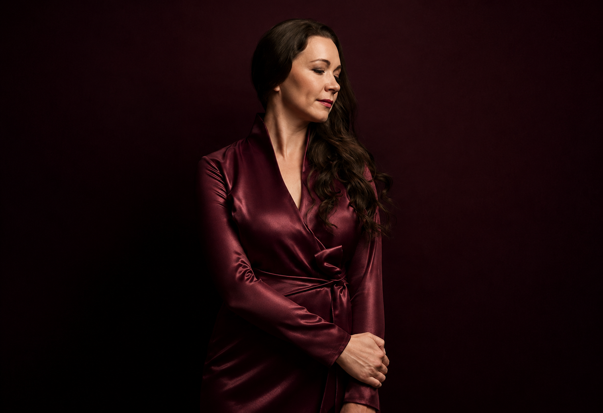

П. И. Чайковский / Иоланта
Оперный спектакль / концертное исполнение
Иоланта Подробнее ↗
Opera / concert repertoire
Repertoire cards
Раздел очищен от материалов другого артиста. Оставлены только страницы, связанные с Ксенией Муслановой: сопрановый репертуар, концертные программы и форматы для театров и филармоний.
Оперный спектакль / концертное исполнение
Иоланта Подробнее ↗Сцены и арии из оперы
Татьяна Подробнее ↗Оперный спектакль / концертное исполнение
Лиза Подробнее ↗Сцены и арии из оперы
Чио-чио-сан Подробнее ↗Оперный спектакль / концертное исполнение
Аида Подробнее ↗Оперный спектакль / концертное исполнение
Микаэла Подробнее ↗Русская опера / концертные сцены
Ярославна Подробнее ↗Оперный спектакль / концертное исполнение
Ариадна Подробнее ↗